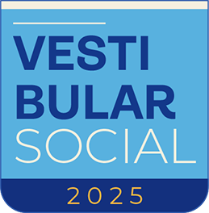

Bolsas do Vestibular Social da PUC
O Vestibular Social da PUC é uma iniciativa voltada para estudantes de baixa renda que desejam ingressar em uma das instituições mais renomadas do Brasil, a Pontifícia Universidade Católica (PUC). Essa modalidade de ingresso oferece bolsas de estudo parciais e integrais, possibilitando o acesso ao ensino superior de qualidade com condições especiais, garantindo inclusão educacional e oportunidades para jovens talentos.
Objetivo do Vestibular Social
O objetivo principal do Vestibular Social é democratizar o acesso ao ensino superior, oferecendo bolsas de estudo com descontos significativos ou até mesmo integrais para estudantes em situação de vulnerabilidade econômica. A busca iniciativa identificar e valorizar jovens que possuem potencial acadêmico, mas que enfrentam barreiras financeiras para iniciar sua formação universitária.
Com isso, o Vestibular Social também contribui para a transformação social, formando profissionais formados e preparados para atender às demandas do mercado de trabalho e para atuar como agentes de mudança em suas comunidades.
Vestibular Social
A Pontifícia Universidade Católica (PUC) oferece o Vestibular Social como uma oportunidade para que mais alunos tenham acesso à sua infraestrutura de excelência e aos seus cursos reconhecidos nacionalmente. As bolsas concedidas pela PUC, por meio do programa, são um reflexo do compromisso da universidade com a inclusão social e a responsabilidade educacional.
Os estudantes que ingressam por meio do Vestibular Social têm as mesmas condições de ensino que os demais alunos, participando de uma formação acadêmica de alta qualidade, com professores capacitados, laboratórios modernos e um ambiente que promove o desenvolvimento integral do aluno.
Como se Inscrever no Vesibular Social da PUC
1.Consulte os requisitos do programa :
→ Ter cursado o ensino médio em escola pública ou como bolsista integral em escola particular.
→ Comprovar renda familiar bruta mensal per capita que se enquadra nos critérios do programa (geralmente até 3 períodos mínimos, mas pode variar dependendo da unidade da PUC).
2.Consulte os cursos disponíveis:
→ Preencha o formulário de inscrição e escolha o curso de sua preferência.
4.Complete sua matrícula na PUC:
→ Comprove as informações fornecidas
Conclua sua matrícula diretamente com a universidade para garantir sua vaga e o benefício da bolsa.
A PUC é reconhecida por sua infraestrutura de ponta, professores renomados e um ambiente que promove o desenvolvimento acadêmico, social e cultural de seus alunos. O Vestibular Social é o caminho para tornar essa experiência acessível a todos que sonham com um ensino superior de qualidade.
Se você tem o sonho de fazer uma graduação e acredita que o Vestibular Social é o programa ideal para você, não perca tempo! Acesse o site da PUC, confira os detalhes e inscreva-se para dar o primeiro passo rumo a um futuro brilhante.